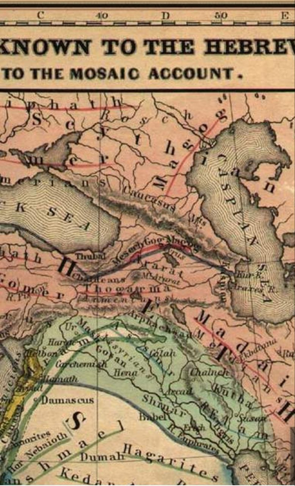

وعد الآخره در پرتو قرآن و عهدین
نویسنده: سپهر محمدی / نگارش نخست: آبان ۱۴۰۳ | آخرین ویرایش: ۱۶ مهر ۱۴۰۵
چکیده
۱. سورهٔ اسراء (۱۷: ۴–۸) از دو وعدهٔ الهی خبر میدهد: «وَعْدُ أُولَاهُمَا» (وعدهٔ اول) و «وَعْدُ الْآخِرَةِ» (وعدهٔ دوم/پسین).
۲. این دو وعده با دو «فساد» بنیاسرائیل در زمین گره خوردهاند (۱۷: ۴: «لَتُفْسِدُنَّ فِي الْأَرْضِ مَرَّتَيْنِ»).
۳. وعدهٔ اول با تخریب معبد سلیمان توسط بابلیان (۵۸۶ ق.م) محقق شد. وعدهٔ آخره با تخریب معبد دوم توسط رومیان (۷۰ م) محقق گشت.
۴. قرآن صریحاً میفرماید ورود دوم «همانطور» بود که ورود اول: «كَمَا دَخَلُوهُ أَوَّلَ مَرَّةٍ» (۱۷: ۷). این یعنی ساختار دو وعده باید متناظر باشد.
۵. پس از وعدهٔ اول، خداوند «کَرّه» (بازگشت قدرت) داد و بنیاسرائیل با فرمان کوروش (ذوالقرنین) بازگشتند — کوروش صریحاً گفت: «خداوند … وعدهٔ خود را به جا آورد» (دوم تواریخ ۳۶: ۲۲). دانیال نبی — همدورهٔ کوروش — نیز این فرمان را پیشبینی کرده بود (دانیال ۹: ۲۵) و کوروش را «مسیح» خوانده بود (اشعیا ۴۵: ۱).
۶. دانیال ۹ (۲۴–۲۷) الگوی دو وعده را از عهد عتیق تأیید میکند: ۶۹ هفته (۴۸۳ سال) از فرمان بازسازی تا آمدن اول عیسی مسیح (~۲۷ م)، سپس مصلوبشدن او و تخریب معبد دوم (۷۰ م) توسط رومیان. «رجاسات ویرانکننده» سه بار محقق شده است: آنتیوخوس (۱۶۷ ق.م)، انکار مسیح و شکافتهشدن پردهٔ معبد (~۳۰ م)، و تخریب رومی (۷۰ م). بازگشت نهایی از دانیال ۹ قابل استخراج نیست — آن از اسراء ۱۷: ۱۰۴ و حزقیال ۳۸–۳۹ پیگیری میشود.
۷. پس از وعدهٔ آخره نیز بازگشت نهایی در کار است: «فَإِذَا جَاءَ وَعْدُ الْآخِرَةِ جِئْنَا بِكُمْ لَفِيفًا» (۱۷: ۱۰۴).
۸. این بازگشت نهایی مشروط به فرو ریختن سد ذوالقرنین است: «فَإِذَا جَاءَ وَعْدُ رَبِّي جَعَلَهُ دَكَّاءَ» (کهف: ۹۸).
۹. «وَعْدُ رَبِّي» (کهف: ۹۸) و «وَعْدُ الْحَقّ» (انبیاء: ۹۷) مراحل یا نامهای دیگر همان «وَعْدُ الْآخِرَةِ»اند — هر کدام بُعدی از یک رویداد واحد را برجسته میکنند.
۱۰. یأجوج (جوج) در عهد عتیق از بنیاسرائیل است: «پسرش جوج» (اول تواریخ ۵: ۴). در حزقیال (۳۸–۳۹)، خداوند جوج را به کوههای اسرائیل «برمیگرداند».
۱۱. بر مردم سرزمین هلاکشده بازگشت حرام است (انبیاء: ۹۵) — تا زمانی که یأجوج و مأجوج گشوده شوند (انبیاء: ۹۶). این حکم بازتابی از حکم حِرِم (חֵרֶם) توراتی است (تثنیه ۱۳: ۱۲-۱۶) که بر اورشلیم به سبب بتپرستی بنیاسرائیل جاری شد؛ دیدگاهی که یهودیان ارتدوکس نیز بر پایهٔ سه قسم تلمودی (کتوبوت ۱۱۱a) بر حرام بودن بازگشت پیش از ماشیح تأیید دارند.
۱۲. تطبیق ساختاری دو وعده نشان میدهد: همانطور که کوروش (ذوالقرنین) مقدمهٔ بازگشت اول بود، گشودهشدن یأجوج و مأجوج مقدمهٔ بازگشت نهایی است.
۱۳. مجموعهٔ آیات اسراء، کهف، انبیاء در قرآن، و دانیال ۹، حزقیال، عزرا و دوم تواریخ در عهد عتیق، یک روایت واحد و پیوسته را تشکیل میدهند.
۱- مقدمه: طرح مسئله و روش
در ابتدای سورهٔ اسراء، خداوند از دو «وعد» سخن میگوید که به بنیاسرائیل تعلق دارد. در میان این دو وعده، از «فساد در زمین»، «کَرّه» (بازگشت قدرت)، «وعْدُ الْآخِرَةِ» و ورود مجدد به «مسجد» یاد شده است.
کلیدواژههای مشترک — بازگشت، رجعت، کرت، وعده و فساد در زمین — نخ تسبیحی هستند که این آیات را به داستان یأجوج و مأجوج و ذوالقرنین در سورهٔ کهف و سورهٔ انبیاء پیوند میدهند.
در این نوشتار میکوشیم نشان دهیم که:
- وعدهٔ اول و وعدهٔ آخره دو رویداد تاریخی هستند (نه قیامت).
- ساختار این دو وعده متناظر است — یعنی هر فاز از وعدهٔ اول، فازی متناظر در وعدهٔ آخره دارد.
- «وَعْدُ رَبِّي» (کهف) و «وَعْدُ الْحَقّ» (انبیاء) مراحل یا نامهای دیگر همان «وَعْدُ الْآخِرَةِ»اند.
- کوروش/ذوالقرنین حلقهٔ اتصال هر دو وعده است: او عامل بازگشت اول بود و سد او مقدمهٔ بازگشت نهایی است.
۲- وعدهٔ اول: فساد نخست و تخریب معبد سلیمان
۲-۱- وعدهٔ فساد
الاسراء ۱۷: ۴
وَقَضَيْنَا إِلَىٰ بَنِي إِسْرَائِيلَ فِي الْكِتَابِ لَتُفْسِدُنَّ فِي الْأَرْضِ مَرَّتَيْنِ وَلَتَعْلُنَّ عُلُوًّا كَبِيرًا
و در کتاب آسمانیشان به فرزندان اسرائیل خبر دادیم که قطعاً دو بار در زمین فساد خواهید کرد و قطعاً به سرکشی بسیار بزرگی برخواهید خواست.
۲-۲- تحقق وعدهٔ اول
الاسراء ۱۷: ۵
فَإِذَا جَاءَ وَعْدُ أُولَاهُمَا بَعَثْنَا عَلَيْكُمْ عِبَادًا لَّنَا أُولِي بَأْسٍ شَدِيدٍ فَجَاسُوا خِلَالَ الدِّيَارِ وَكَانَ وَعْدًا مَّفْعُولًا
پس آنگاه که وعدهٔ نخستین آن دو فرا رسید، بندگانمان را — که سخت نیرومندند — بر شما گماردیم تا میان خانهها به جستجو درآیند و این وعده محقق گشت.
تطبیق تاریخی: «عباد اولی بأس شدید» بابلیان به فرمان بختالنصر بودند که در ۵۸۶ ق.م معبد سلیمان را تخریب کردند، بنیاسرائیل را کشتند و به بابل تبعید نمودند. «فَجَاسُوا خِلَالَ الدِّيَارِ» — جستجو در خانهها — توصیف دقیقی از غارت اورشلیم توسط بابلیان است.
۳- بازگشت اول: کَرّه و فرمان کوروش
۳-۱- وعدهٔ بازگشت قدرت
الاسراء ۱۷: ۶
ثُمَّ رَدَدْنَا لَكُمُ الْكَرَّةَ عَلَيْهِمْ وَأَمْدَدْنَاكُم بِأَمْوَالٍ وَبَنِينَ وَجَعَلْنَاكُمْ أَكْثَرَ نَفِيرًا
پس دوباره شما را بر آنان چیره میکنیم و شما را با اموال و پسران یاری میدهیم و نفرات شما را بیشتر میگردانیم.
۳-۲- کوروش در عهد عتیق: ذوالقرنین و قوچ دو شاخ
داستان ذوالقرنین پیش از نزول قرآن در فرهنگ اعراب و یهودیان شناخته شده بود، زیرا «يَسْأَلُونَكَ عَن ذِي الْقَرْنَيْنِ» (کهف: ۸۳) نشان میدهد پرسشکنندگان از پیش با این داستان آشنایی داشتهاند.
در عهد عتیق، ذوالقرنین همان قوچ دو شاخی است که دانیال نبی در خواب میبیند:
دانیال 8:3-4، 20
«چشم برافراشتم و دیدم که قوچی کنار نهر ایستاده بود و دو شاخ داشت… آن قوچ که دیدی و دو شاخ داشت، همان پادشاهان ماد و پارس هستند.»
بسیاری از مفسران مسلمان از جمله صاحب المیزان این قوچ دو شاخ را با ذوالقرنین منطبق دانستهاند.
۳-۳- فرمان کوروش و «وعد خدا»
نکتهٔ شگفتانگیز اینجاست که کوروش در فرمان خود صریحاً به «وعد خدا» اشاره میکند — دقیقاً همان مفهومی که در کهف «وَعْدُ رَبِّي» نامیده میشود:
دوم تواریخ 36:22-23
«و در سال اول کوروش پادشاه پارس، چون کلام خداوند به وسیلهٔ ارمیای نبی تمام شد، خداوند روح کوروش پادشاه پارس را برانگیخت که در تمام مملکت خود اعلامیهای منتشر ساخت… خداوند خدای آسمنها… مرا فرمان داد که برای او خانهای در اورشلیم بسازم و خداوند وعدهٔ خود را به جا آورد.»
عزرا 1:1-2
«و در سال اول کوروش پادشاه پارس، چون کلام خداوند به وسیلهٔ ارمیای نبی تمام شد، خداوند روح کوروش پادشاه پارس را برانگیخت… خداوند خدای آسمها… مرا برانگیخت تا برای او در اورشلیم خانهای بسازم.»
یعنی کوروش بازگشت بنیاسرائیل و ساخت معبد دوم را تحقق وعدهٔ خدا میداند. این «وعد» همان «وَعْدُ أُولَاهُمَا» است که با بازگشت از تبعید بابلی محقق شد.
۳-۴- دانیال ۹: شاهدی از عهد عتیق بر الگوی دو وعده
دانیال نبی — که خود همدورهٔ کوروش بود و از تبعید بابل تا آغاز دورهٔ هخامنشی زیست — در فصل ۹ کتاب خود رؤیایی میبیند که دقیقاً همان الگوی دو وعدهٔ قرآنی را بازتاب میدهد:
دانیال 9:24-27
«هفتاد هفته [هفتاد هفتا] دربارهٔ قوم تو و شهر مقدست مقرر شده است تا سرکشی به پایان رسد و بر گناه مهر نهاده شود…
پس بدان و فهم کن که از خروج فرمانِ بازسازی اورشلیم تا مسیح رئیس، هفت هفته و شصت و دو هفته خواهد بود…
و بعد از شصت و دو هفته مسیح بریده خواهد شد… و قومِ آینده شهر و مقدس را ویران خواهند کرد…
و او یک هفته را برای بسیاری استوار خواهد ساخت و در نیمهٔ هفته قربانی و هدیه را برخواهد داشت و بر بالِ مقدس رجاساتِ ویرانکننده خواهد نهاد.»
محاسبهٔ زمانی
کل ۷۰ هفته (۴۹۰ سال) از یک مبدأ آغاز میشوند. اگر مبدأ را فرمان اردشیر به عزرا (۴۵۷ ق.م) بگیریم:
| بازه | مدت | سال پایان | رویداد |
|---|---|---|---|
| ۷ + ۶۲ = ۶۹ هفته | ۴۸۳ سال | ۴۵۷ − ۴۸۳ = ۲۷ م | آمدن اول عیسی (تعمید و ظهور) |
| ۷۰ هفته (کل) | ۴۹۰ سال | ۴۵۷ − ۴۹۰ = ۳۴ م | پایان انحصار قوم یهود / انجیل برای امتها |
رجاسات ویرانکننده: سه تحقق تاریخی
«رجاسات ویرانکننده» (שִׁקּוּץ מְשֹׁמֵם) در طول تاریخ سه بار محقق شده است:
-
آنتیوخوس اپیفانس (۱۶۷ ق.م): ذبح خوک بر مذبح معبد — این نخستین تحقق بود که در کتاب مکابیان (۱ مکابیان ۱: ۵۴–۵۹) ثبت شده و قیام مکابیان را برانگیخت.
-
انکار و مصلوبشدن عیسی (~۳۰ م): عیسی خود بر اورشلیم گریست و تخریب آن را پیشبینی کرد (متی ۲۳: ۳۷–۳۸؛ لوقا ۱۹: ۴۱–۴۴). پس از به صلیب کشیدن او، پردهٔ معبد از بالا تا پایین شکافته شد (متی ۲۷: ۵۱) — نشانهٔ آنکه عبادت در معبد پایان یافته است. این بزرگترین «رجاست» بود: ردِّ مسیح و پایان نظام قربانی.
-
تخریب معبد توسط رومیان (۷۰ م): «قوم آینده» شهر و مقدس را ویران کردند — تحقق وعدهٔ آخرهٔ قرآنی: «لِيَسُوءُوا وُجُوهَكُمْ وَلِيَدْخُلُوا الْمَسْجَدَ كَمَا دَخَلُوهُ أَوَّلَ مَرَّةٍ» (اسراء ۱۷: ۷).
تطبیق با الگوی دو وعده
| دانیال ۹ | الگوی دو وعده (اسراء ۱۷) | تحقق |
|---|---|---|
| «از خروج فرمان بازسازی اورشلیم» | وعدهٔ اول → کَرّه | فرمان اردشیر (۴۵۷ ق.م) |
| ۶۹ هفته تا «مسیح رئیس» | — | آمدن اول عیسی (~۲۷ م) |
| «مسیح بریده خواهد شد» (۹: ۲۶) | — | مصلوبشدن عیسی (~۳۰ م) |
| «قوم آینده شهر و مقدس را ویران خواهند کرد» | وعدهٔ آخره: «لِيَدْخُلُوا الْمَسْجِدَ» | رومیان/تیتوس (۷۰ م) |
| «رجاسات ویرانکننده» (שִׁקּוּץ מְשֹׁמֵם) | «وَلِيُتَبِّرُوا مَا عَلَوْا تَتْبِيرًا» | سه تحقق: آنتیوخوس / انکار مسیح / تخریب رومی |
نکتهٔ مهم: دانیال ۹ تا تخریب معبد دوم (۷۰ م) را پوشش میدهد، اما بازگشت نهایی از این کتاب قابل استخراج نیست — آن از منابع دیگر (اسراء ۱۷: ۱۰۴، حزقیال ۳۸–۳۹، انبیاء ۲۱: ۹۶–۹۷) قابل پیگیری است.
کوروش و مسیح
شایان توجه است که در عهد عتیق دو «مسیح» (משׁיח) متمایز وجود دارد:
- کوروش در اشعیا ۴۵: ۱ «مسیح» نامیده شده — او «مسیح امتها» است که فرمان بازسازی صادر کرد (ر.ک. مسیح امتها یا مسیح اسرائیل؟ و کوروش مسیح، پادشاه امت ها، تنها نمونه تاریخی مهدی موعود).
- عیسی در دانیال ۹: ۲۵ «مسیح رئیس» (מָשִׁיחַ נָגִיד) است — او پس از ۶۹ هفته میآید و «بریده خواهد شد» (۹: ۲۶).
بنابراین، دانیال ۹ سومین شاهد مستقل است که الگوی دو وعده را تأیید میکند:
- دانیال ۹ (عهد عتیق): فرمان بازسازی → آمدن اول مسیح → مصلوبشدن → تخریب دوم (۷۰ م)
- اسراء ۱۷ (قرآن): وعدهٔ اولی → وعدهٔ آخره، «كَمَا دَخَلُوهُ أَوَّلَ مَرَّةٍ»
- حزقیال ۳۸–۳۹: بازگرداندن جوج به کوههای اسرائیل → بازگشت نهایی
۴- وعدهٔ آخره: فساد دوم و تخریب معبد دوم
۴-۱- وعدهٔ فساد دوم
الاسراء ۱۷: ۷
إِنْ أَحْسَنتُمْ أَحْسَنتُمْ لِأَنفُسِكُمْ وَإِنْ أَسَأْتُمْ فَلَهَا فَإِذَا جَاءَ وَعْدُ الْآخِرَةِ لِيَسُوءُوا وُجُوهَكُمْ وَلِيَدْخُلُوا الْمَسْجِدَ كَمَا دَخَلُوهُ أَوَّلَ مَرَّةٍ وَلِيُتَبِّرُوا مَا عَلَوْا تَتْبِيرًا
اگر نیکی کنید به خود نیکی کردهاید و اگر بدی کنید به خود [بد نمودهاید] و چون وعدهٔ دیگر فرا رسد [بیایند] تا شما را اندوهگین کنند و در معبدتان چنانکه بار اول داخل شدند درآیند و بر هر چه دست یافتند یکسره نابود کنند.
تطبیق تاریخی: «وَعْدُ الْآخِرَةِ» با تخریب معبد دوم توسط تیتوس رومی در سال ۷۰ میلادی محقق شد. رومیان وارد مسجد (معبد) شدند، آن را ویران کردند و بنیاسرائیل را پراکنده ساختند.
۴-۲- عبارت «كَمَا دَخَلُوهُ أَوَّلَ مَرَّةٍ»: کلید تطبیق ساختاری
عبارت «كَمَا دَخَلُوهُ أَوَّلَ مَرَّةٍ» (همانطور که بار اول وارد شدند) اصلِ تطابق ساختاری دو وعده را بیان میکند. خداوند میتوانست بگوید «بار دیگر وارد میشوند» بدون «كَمَا». اما با این عبارت تأکید کرد که ساختار بار دوم مثل بار اول است:
| فاز | وعدهٔ اول | وعدهٔ آخره |
|---|---|---|
| فساد | فساد نخست (۱۷: ۴) | فساد دوم (۱۷: ۷) |
| وعده | «وَعْدُ أُولَاهُمَا» (۱۷: ۵) | «وَعْدُ الْآخِرَةِ» (۱۷: ۷) |
| حمله | «عِبَادًا أُولِي بَأْسٍ شَدِيدٍ» (۱۷: ۵) | «لِيَسُوءُوا وُجُوهَكُمْ» (۱۷: ۷) |
| عامل | بابلیان (بختالنصر، ۵۸۶ ق.م) | رومیان (تیتوس، ۷۰ م) |
| ورود | «فَجَاسُوا خِلَالَ الدِّيَارِ» (۱۷: ۵) | «كَمَا دَخَلُوهُ أَوَّلَ مَرَّةٍ» (۱۷: ۷) |
| تخریب | معبد سلیمان | معبد دوم |
| هلاکت | «وَكَانَ وَعْدًا مَّفْعُولًا» (۱۷: ۵) | «وَلِيُتَبِّرُوا مَا عَلَوْا تَتْبِيرًا» (۱۷: ۷) |
۵- حکم حرام: بازگشت به سرزمین هلاکشدگان
۵-۱- حکم قرآنی
الانبیاء ۲۱: ۹۵
وَحَرَامٌ عَلَىٰ قَرْيَةٍ أَهْلَكْنَاهَا أَنَّهُمْ لَا يَرْجِعُونَ
و بر [مردم] شهری که آن را هلاک کردهایم بازگشتشان حرام است.
پس از تخریب دوم (۷۰ م)، بنیاسرائیل پراکنده شدند و بازگشت به سرزمین مقدس بر آنان حرام شد. این حکم تا زمان مقرر پابرجاست.
قرآن در جای دیگر نیز به هلاکت قومی از بنیاسرائیل اشاره میکند که در شهری کنار دریا ساکن بودند و حکم شنبه را نقض میکردند:
الاعراف ۷: ۱۶۳
وَاسْأَلْهُمْ عَنِ الْقَرْيَةِ الَّتِي كَانَتْ حَاضِرَةَ الْبَحْرِ إِذْ يَعْدُونَ فِي السَّبْتِ إِذْ تَأْتِيهِمْ حِيتَانُهُمْ يَوْمَ سَبْتِهِمْ شُرَّعًا وَيَوْمَ لَا يَسْبِتُونَ لَا تَأْتِيهِمْ كَذَٰلِكَ نَبْلُوهُم بِمَا كَانُوا يَفْسُقُونَ
و از اهالى آن شهرى كه كنار دريا بود، از ايشان جويا شو: آن گاه كه به [حكمِ] روز شنبه تجاوز مىكردند؛ آن گاه كه روز شنبه آنان، ماهيهايشان روى آب مىآمدند، و روزهاى غير شنبه به سوى آنان نمىآمدند. اين گونه ما آنان را به سبب آنكه نافرمانى مىكردند، مىآزموديم.
الاعراف ۷: ۱۶۴
وَإِذْ قَالَتْ أُمَّةٌ مِّنْهُمْ لِمَ تَعِظُونَ قَوْمًا اللَّهُ مُهْلِكُهُمْ أَوْ مُعَذِّبُهُمْ عَذَابًا شَدِيدًا…
و آن گاه كه گروهى از ايشان گفتند: «براى چه قومى را كه خدا هلاككنندهٔ ايشان است، يا آنان را به عذابى سخت عذاب خواهد كرد، پند مىدهيد؟»…
این «قریة حاضرة البحر» (شهر کنار دریا) به احتمال قوی اورشلیم یا یکی از شهرهای سرزمین اسرائیل بوده است — زیرا سورهٔ اعراف در همین بخش داستان بنیاسرائیل و سرزمین موعود را روایت میکند (۷: ۱۳۷: «و اورثنا القوم…»)، و نقض شنبه در سنت انبیاء یکی از گناهان بنیاسرائیل در اورشلیم بوده است (ارمیا ۱۷: ۲۱–۲۷؛ حزقیال ۲۰: ۱۲–۱۳؛ نحمیا ۱۳: ۱۵–۲۲). خداوند این قوم را هلاک کرد و بر بازگشتشان به آن سرزمین حکم حرام نهاد.
۵-۲- حکم حِرِم در تورات: بنیاسرائیل خود مشمول حکم شدند
این حکم قرآنی بازتابی از حکم حِرِم (חֵרֶם / herem) در تورات است — حکمی که در تورات برای سه گروه آمده است: شش قوم کنعان (تثنیه ۲۰: ۱۶-۱۸)، عمالیق، و — مهمتر — قبیله یا شهری از خود بنیاسرائیل که بتپرستی کند:
تثنیه 13:12-16
«اگر درباره یکی از شهرهایی که یهوه خدایت به تو به جهت سکونت میدهد خبر یابی، که بعضی پسران بلیعال از میان تو بیرون رفته، ساکنان شهر خود را منحرف ساخته، گفتهاند برویم و خدایان غیر را که نشناختهاید، عبادت نماییم… البته ساکنان آن شهر را به دم شمشیر بکش و آن را با هرچه در آن است به آتش بالکل بسوزان، و آن تا به ابد تلی خواهد بود و بار دیگر بنا نخواهد شد. و از چیزهای حرام شده چیزی به دستت نچسبد.»
این حکم (عیر ها-نیداخت / עיר הנידחת — «شهر گمراهشده») هیچگاه توسط بنیاسرائیل اجرا نشد، زیرا خودِ آنان بارها در اورشلیم و معبد بتپرستی کردند. خدا خود این حکم را از طریق اقوام دیگر دربارهٔ اورشلیم اجرا کرد:
- ارمیا ۳۲: ۳۳–۳۵ — بعلپرستی داخل شهر و معبد
- حزقیال ۸: ۵–۱۷ — پرستش بتها در داخل معبد اورشلیم
- ۲ پادشاهان ۲۱: ۳–۷ — بعل و اشیره در اورشلیم و معبد
- ۲ تواریخ ۳۳: ۳–۷ — منسّا مذبحهای بتها را در اورشلیم ساخت
بنابراین، حکم «وَحَرَامٌ عَلَىٰ قَرْيَةٍ أَهْلَكْنَاهَا» (انبیاء: ۹۵) دقیقاً ناظر به همین حکم حِرِم توراتی است: اورشلیم به سبب بتپرستی بنیاسرائیل مشمول حِرِم شد و ورود به آن و هرگونه منفعت از آن تا اطلاع ثانوی حرام گشت. (ر.ک. گناه ساکنین کنعان و فضل بنی اسرائیل)
۵-۳- دیدگاه یهودیان ارتدوکس: حرام بودن بازگشت پیش از ماشیح
جای توجه است که بسیاری از یهودیان ارتدوکس (حرِدی) نیز بر اساس تلمود و تفسیر سنتی تورات، ورود به سرزمین موعود و بهویژه بازسازی معبد را پیش از ظهور ماشیح حرام میدانند. این دیدگاه بر پایهٔ سه قسم تلمودی (شِوا شوُعوت / שלוש שבועות) استوار است که ریشه در سه آیه از سُرای سلیمان (Song of Songs) دارد — هر سه با عبارت «شما را سوگند میدهم… که عشق مرا بیدار نکنید تا او بخواهد»:
سرای سلیمان 2:7
«ای دختران اورشلیم، شما را به آهوان و غزالان صحرا سوگند میدهم که عشق مرا برنیانگیزید و بیدار نکنید تا او خودش بخواهد.»
سرای سلیمان 3:5
«ای دختران اورشلیم، شما را به آهوان و غزالان صحرا سوگند میدهم که عشق مرا برنیانگیزید و بیدار نکنید تا او خودش بخواهد.»
سرای سلیمان 8:4
«ای دختران اورشلیم، شما را سوگند میدهم که عشق مرا برنیانگیزید و بیدار نکنید تا او خودش بخواهد.»
تلمود این سه «سوگند» را به سه حکم عملی تعبیر کرده است:
تلمود، کِتوبوت ۱۱۱a
«سه قسم داده شد: نخست، اینکه اسرائیل مانند سه دیواری [با زور] به سرزمین [موعود] بازنگردند؛ دوم، اینکه خداوند به اسرائیل فرمان داد تا بر [دیگر] ملتها شورش نکنند؛ سوم، اینکه خداوند به ملتها فرمان داد تا اسرائیل را بیش از حد ستم نکنند.»
بر اساس این حکم تلمودی، هرگونه تلاش انسانی برای بازگشت جمعی به سرزمین مقدس یا بازسازی معبد پیش از آمدن ماشیح نقض قسم الهی محسوب میشود. برخی از گروههای حرِدی (مانند نتوری کارتا) بر همین اساس با دولت اسرائیل مخالفت میورزند.
این دیدگاه سنتی یهودی با حکم قرآنی «وَحَرَامٌ عَلَىٰ قَرْيَةٍ أَهْلَكْنَاهَا أَنَّهُمْ لَا يَرْجِعُونَ» (انبیاء: ۹۵) همخوان است: هر دو سنت تأیید میکنند که بازگشت به سرزمین مقدس مشروط به فرمان الهی است و پیش از آن حرام است — و آن فرمان الهی، در نظریهٔ این نوشتار، همان «وَعْدُ الْآخِرَةِ» است که با گشودهشدن یأجوج و مأجوج محقق میشود.
۶- وعْدُ رَبِّي: فرو ریختن سد ذوالقرنین
۶-۱- سد ذوالقرنین و یأجوج و مأجوج
در سورهٔ کهف، به ذوالقرنین شکایت میشود که یأجوج و مأجوج در زمین فساد میکنند:
کهف ۱۸: ۹۴
قَالُوا يَا ذَا الْقَرْنَيْنِ إِنَّ يَأْجُوجَ وَمَأْجُوجَ مُفْسِدُونَ فِي الْأَرْضِ فَهَلْ نَجْعَلُ لَكَ خَرْجًا عَلَىٰ أَن تَجْعَلَ بَيْنَنَا وَبَيْنَهُمْ سَدًّا
گفتند ای ذوالقرنین یأجوج و مأجوج سخت در زمین فساد میکنند… تا سدی میان ما و آنان بسازی.
ذوالقرنین سد را میسازد و سپس میفرماید:
کهف ۱۸: ۹۸
قَالَ هَٰذَا رَحْمَةٌ مِّن رَّبِّي فَإِذَا جَاءَ وَعْدُ رَبِّي جَعَلَهُ دَكَّاءَ وَكَانَ وَعْدُ رَبِّي حَقًّا
گفت این رحمتی از جانب پروردگارم است؛ پس چون وعدهٔ پروردگارم فرا رسد، آن [سد] را در هم کوبد و وعدهٔ پروردگارم حق است.
۶-۲- «وَعْدُ رَبِّي» در کهف و «وعد خدا» در فرمان کوروش
توجه کنید به تقارن شگفتانگیز:
| کوروش (بازگشت اول) | ذوالقرنین (بازگشت نهایی) | |
|---|---|---|
| ساخت | معبد دوم | سد در برابر یأجوج و مأجوج |
| فرو ریختن | — | «جَعَلَهُ دَكَّاءَ» (کهف: ۹۸) |
| وعده | «خداوند وعدهٔ خود را به جا آورد» (دوم تواریخ ۳۶: ۲۲) | «فَإِذَا جَاءَ وَعْدُ رَبِّي» (کهف: ۹۸) |
| نتیجه | بازگشت بنیاسرائیل از بابل | بازگشت نهایی بنیاسرائیل |
همانطور که کوروش با استناد به «وعدهٔ خدا» معبد دوم را ساخت و بازگشت اول را ممکن کرد، فرو ریختن سد ذوالقرنین با «وَعْدُ رَبِّي» بازگشت نهایی را ممکن خواهد ساخت.
۶-۳- «وَعْدُ رَبِّي» نام دیگر «وَعْدُ الْآخِرَةِ»
«وَعْدُ رَبِّي» در کهف: ۹۸ همان «وَعْدُ الْآخِرَةِ» در اسراء: ۷ و ۱۰۴ است — با این تفاوت که:
- «وَعْدُ الْآخِرَةِ» از نظر ترتیب نامیده شده (آخرین وعده، بعد از وعدهٔ اولی)
- «وَعْدُ رَبِّي» از نظر منتسب نامیده شده (وعدهٔ خدا — تأکید بر اینکه خدا وعدهدهنده است)
۷- وعْدُ الْحَقّ: نزدیکشدن وعدهٔ نهایی
الانبیاء ۲۱: ۹۶
حَتَّىٰ إِذَا فُتِحَتْ يَأْجُوجُ وَمَأْجُوجُ وَهُم مِّن كُلِّ حَدَبٍ يَنسِلُونَ
تا وقتی که یأجوج و مأجوج [راهشان] گشوده شود و آنان از هر تپهای بتازند.
الانبیاء ۲۱: ۹۷
وَاقْتَرَبَ الْوَعْدُ الْحَقُّ فَإِذَا هِيَ شَاخِصَةٌ أَبْصَارُ الَّذِينَ كَفَرُوا يَا وَيْلَنَا قَدْ كُنَّا فِي غَفْلَةٍ مِّنْ هَٰذَا بَلْ كُنَّا ظَالِمِينَ
و وعدهٔ حق نزدیک گردید؛ ناگاه دیدگانشان خیره میشود…
«وَعْدُ الْحَقّ» نیز نام دیگری از همان «وَعْدُ الْآخِرَةِ» است — با تأکید بر ماهیت آن (حتماً محقق میشود). ترتیب آیات انبیاء نشان میدهد:
- حکم حرام بودن بازگشت (۹۵)
- تا زمانی که یأجوج و مأجوج گشوده شوند (۹۶) — رفع حکم حرام
- سپس وعدهٔ حق نزدیک میشود (۹۷)
- بازگشت نهایی (۱۰۴): «جِئْنَا بِكُمْ لَفِيفًا»
۸- یأجوج (جوج) از بنیاسرائیل

جوج (یأجوج) از بنیاسرائیل است، در حالی که مأجوج و اقوام همپیمان او — ماشک، توبال، گومر — از نسلهای غیراسرائیلی نوحاند.
اول تواریخ 5:3-4
«پسران رؤبین نخستزادهٔ اسرائیل… و پسران یوئیل: پسرش شمَعیا و پسرش جوج و پسرش شمِعی.»
از این آیه روشن میشود که جوج — که در قرآن «یأجوج» خوانده شده — از بنیاسرائیل است.
۸-۱- منطقهٔ سکونت یأجوج و مأجوج
بر اساس جدول اقوام نوح (پیدایش ۱۰)، منطقهٔ سکونت مأجوج و اقوام همپیمان او (ماشک، توبال، گومر و اشکناز) شمالی — حدود فلات قفقاز، میان دریای خزر و دریای سیاه، و چیزی حدود اوکراین کنونی — بوده است. این همان منطقهای است که خزرها قرنها در آن ساکن بودند و امپراتوری خزری (قرن ۶–۱۱ م) را تشکیل دادند.
نکتهٔ شگفتانگیز آنکه خزرها در حدود سال ۷۴۰ م (قرن هشتم میلادی) به رهبری پادشاه بولان (که با نام سَبرئیل نیز شناخته میشود) تصمیم گرفتند همگی با هم یهودیت را بپذیرند. این گرویدن دستهجمعی در منابع متعددی ثبت شده است:
- مکاتبات خزری (نامهٔ پادشاه یوزف خزری به حَسدای بن شَپرُوط، قرن ۱۰ م) — پادشاه خزری صریحاً نسب خود را به یهودیت میرساند و از گرویدن نیاکانش به یهودیت سخن میگوید.
- کتاب الخزری (یهودا هالِوی، قرن ۱۲ م) — گزارش مفصل مناظرهٔ پادشاه خزری با نمایندگان ادیان مختلف و انتخاب یهودیت.
- سِفر یوسف کوهِن (ابراهیم بن داوود، قرن ۱۲ م) — تأیید گرویدن نخبگان و مردم خزری به یهودیت.
این واقعیت تاریخی — که قومی غیراسرائیلی از منطقهٔ مأجوج داوطلبانه یهودیت را پذیرفت — از نظر این نوشتار قابل تأمل است. (ر.ک. جوج و ماجوج کیستند؟) ) حزقیال نیز از جوج به عنوان کسی از «اطراف شمال» یاد میکند:
حزقیال 38:6
«جوج و تمام لشکرش… و همه از اطراف شمال.»
عبارت «יַרְכְּתֵי צָפוֹן» (یارْکِتی صافون / اطراف شمال) در عهد عتیق معمولاً به مناطق شمالی فلات قفقاز اشاره دارد. (ر.ک. جوج و ماجوج کیستند؟)
۹- بازگشت جوج به سرزمین مقدس در عهد عتیق
در عهد عتیق دوبار به بازگشت جوج به سرزمین اسرائیل اشاره شده است:
حزقیال 38:1-4
«ای پسر انسان نظر خود را بر جوج که از زمین ماجوج و رئیس روش و ماشک و توبال است بدار… و تو را برگردانیده، قلاب خود را به چانهات میگذارم و تو را با تمامی لشکرت بیرون میآورم…»
حزقیال 39:1-2
«ای جوج رئیس روش و ماشک و توبال… تو را برمیگردانم و رهبری مینمایم و تو را از اطراف شمال برآورده، بر کوههای اسرائیل خواهم آورد.»
این «بازگرداندن جوج به کوههای اسرائیل» دقیقاً با «جِئْنَا بِكُمْ لَفِيفًا» (۱۷: ۱۰۴) همسو است.
۱۰- بازگشت نهایی: جئنا بکم لفیفاً
الاسراء ۱۷: ۱۰۴
وَقُلْنَا مِن بَعْدِهِ لِبَنِي إِسْرَائِيلَ اسْكُنُوا الْأَرْضَ فَإِذَا جَاءَ وَعْدُ الْآخِرَةِ جِئْنَا بِكُمْ لَفِيفًا
و پس از او به فرزندان اسرائیل گفتیم: در این سرزمین ساکن شوید؛ پس چون وعدهٔ دیگر فرا رسد، شما را همه با هم بازمیگردانیم.
«لَفِيفًا» یعنی «همه با هم، گردآمده» — بازگشتی یکباره و جمعی، نه تدریجی.
۱۱- تطبیق ساختاری دو وعده: نمودار کامل
| فاز | وعدهٔ اول | وعدهٔ آخره |
|---|---|---|
| فساد | فساد نخست (۱۷: ۴) | فساد دوم (۱۷: ۷) |
| ↓ | ||
| وعده | «وَعْدُ أُولَاهُمَا» (۱۷: ۵) | «وَعْدُ الْآخِرَةِ» (۱۷: ۷) |
| ↓ | ||
| حمله | «عِبَادًا أُولِي بَأْسٍ شَدِيدٍ» (۱۷: ۵) | «لِيَسُوءُوا وُجُوهَكُمْ» (۱۷: ۷) |
| عامل | بابلیان — بختالنصر (۵۸۶ ق.م) | رومیان — تیتوس (۷۰ م) |
| ↓ | ||
| ورود | «فَجَاسُوا خِلَالَ الدِّيَارِ» — جستجو در خانهها | «كَمَا دَخَلُوهُ أَوَّلَ مَرَّةٍ» — ورود به مسجد |
| ↓ | ||
| تخریب | معبد سلیمان (۵۸۶ ق.م) | معبد دوم (۷۰ م) |
| ↓ | ||
| هلاکت | «وَكَانَ وَعْدًا مَّفْعُولًا» + تبعید بابلی | «وَلِيُتَبِّرُوا مَا عَلَوْا تَتْبِيرًا» + تبعید رومی + حرام بودن بازگشت (۲۱: ۹۵) |
| ↓ | ||
| عامل بازگشت | کوروش / ذوالقرنین — فرمان: «وعدهٔ خدا به جا آمد» (دوم تواریخ ۳۶: ۲۲) | فرو ریختن سد ذوالقرنین — «فَإِذَا جَاءَ وَعْدُ رَبِّي» (کهف: ۹۸) |
| ↓ | ||
| بازگشت | کَرّه (۱۷: ۶) — بازگشت از بابل، ساخت معبد دوم (محدود) | جِئْنَا بِكُمْ لَفِيفًا (۱۷: ۱۰۴) — بازگشت نهایی، پس از گشودهشدن یأجوج و مأجوج (جمعی و نهایی) |
دو مسیح، دو لعنت
شایان توجه است که قرآن از دو لعنت بر بنیاسرائیل سخن میگوید:
المائده ۵: ۷۸
لُعِنَ الَّذِينَ كَفَرُوا مِن بَنِي إِسْرَائِيلَ عَلَىٰ لِسَانِ دَاوُودَ وَعِيسَى ابْنِ مَرْيَمَ
و نکتهٔ ظریف آنکه هر دو لعنتکننده «مسیح» بودند: داود (مسیح بنیاسرائیل) لعنت وعدهٔ اول را بر زبان آورد و عیسی (مسیح بنیاسرائیل) لعنت وعدهٔ آخره را. هر کدام در دورهٔ یکی از دو معبد آمدند و هر دو فساد قوم خود را پیشبینی و لعنت کردند.
۱۲- جمعبندی
مجموعهٔ آیات سورهٔ اسراء (۴–۸ و ۱۰۴)، سورهٔ کهف (۸۳–۹۸)، سورهٔ انبیاء (۹۵–۹۷)، و گذارههای دانیال، حزقیال، عزرا و دوم تواریخ در عهد عتیق، یک روایت پیوسته را تشکیل میدهند:
- بنیاسرائیل دو بار در زمین فساد میکنند (۱۷: ۴).
- وعدهٔ اول: بابلیان معبد سلیمان را تخریب میکنند (۵۸۶ ق.م).
- کَرّه: کوروش (ذوالقرنین) با فرمان «وعدهٔ خدا» بازگشت اول را ممکن میسازد.
- وعدهٔ آخره: رومیان معبد دوم را تخریب میکنند (۷۰ م) — «همانطور که بار اول وارد شدند» (۱۷: ۷).
- بازگشت به سرزمین هلاکشدگان حرام است (۲۱: ۹۵) — تا گشودهشدن یأجوج و مأجوج (۲۱: ۹۶).
- وَعْدُ رَبِّي: سد ذوالقرنین فرو میریزد (کهف: ۹۸) — مقدمهٔ بازگشت نهایی.
- وَعْدُ الْحَقّ: وعدهٔ حق نزدیک میشود (انبیاء: ۹۷).
- بازگشت نهایی: «جِئْنَا بِكُمْ لَفِيفًا» — بنیاسرائیل همه با هم بازمیگردند (۱۷: ۱۰۴).
«وَعْدُ الْآخِرَةِ»، «وَعْدُ رَبِّي» و «وَعْدُ الْحَقّ» سه نام برای یک رویداد واحداند — هر کدام بُعدی از وعدهٔ نهایی الهی را برجسته میکند. و کوروش/ذوالقرنین حلقهٔ اتصال هر دو وعده است: او در وعدهٔ اول عامل بازگشت بود و سد او در وعدهٔ آخره مقدمهٔ بازگشت نهایی خواهد بود.
همچنین ببینید
- سهم یهود از نیل تا فرات
- دکترین بقیه
- مسیح امتها یا مسیح اسرائیل؟
- جوج و ماجوج کیستند؟
- کوروش مسیح، پادشاه امت ها، تنها نمونه تاریخی مهدی موعود
منابع
قرآن کریم
- سورهٔ الاسراء (۱۷): آیات ۴–۸، ۱۰۴
- سورهٔ کهف (۱۸): آیات ۸۳–۹۸
- سورهٔ الانبیاء (۲۱): آیات ۹۵–۹۷
- سورهٔ الاعراف (۷): آیات ۴، ۱۳۷، ۱۶۳–۱۶۴، ۱۶۸
عهد عتیق
- دانیال 8:3-4، 20
- دانیال 9:24-27 (هفتاد هفته)
- اشعیا 45:1 (کوروش = «مسیح»)
- ۱ مکابیان 1:54-59 (رجاسات آنتیوخوس)
- حزقیال 38:1-4، 6
- حزقیال 39:1-2
- ارمیا 17:21-27
- نحمیا 13:15-22
- اول تواریخ 5:3-4
- دوم تواریخ 36:22-23
- عزرا 1:1-2
- تثنیه 13:12-16 (حکم عیر ها-نیداخت / شهر گمراهشده)
- سرای سلیمان 2:7 و 3:5 و 8:4 (ریشهٔ سه قسم تلمودی)
- پیدایش ۱۰ (جدول اقوام نوح: گومر، ماشک، توبال)
عهد جدید
- متی 23:37-38، 27:51 (گریه عیسی بر اورشلیم / شکافتهشدن پردهٔ معبد)
- لوقا 19:41-44 (گریه عیسی بر اورشلیم و پیشبینی تخریب معبد)
تلمود
- کتوبوت 111a (سه قسم: شوا شوُعوت)
منابع آنلاین
منابع تاریخی
- مکاتبات خزری (نامهٔ پادشاه یوزف به حسدای بن شَپرُوط، قرن ۱۰ م)
- یهودا هالِوی، کتاب الخزری (کوزری)، قرن ۱۲ م
- ابراهیم بن داوود، سِفر یوسف کوهِن، قرن ۱۲ م